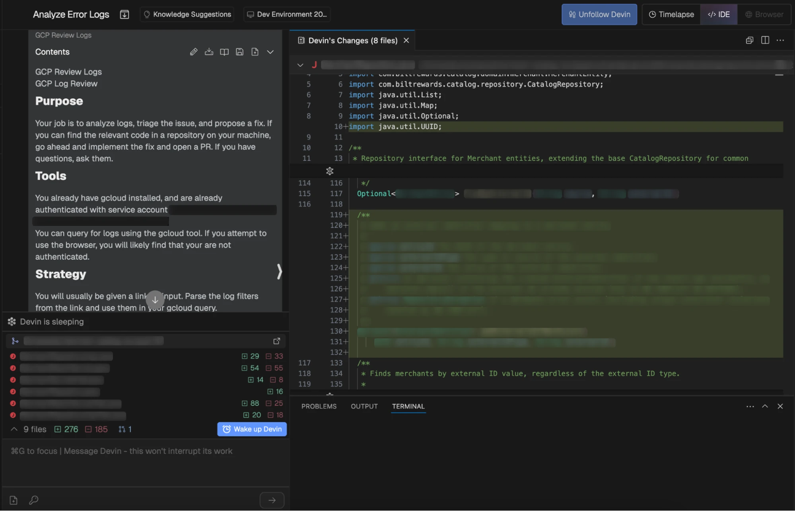
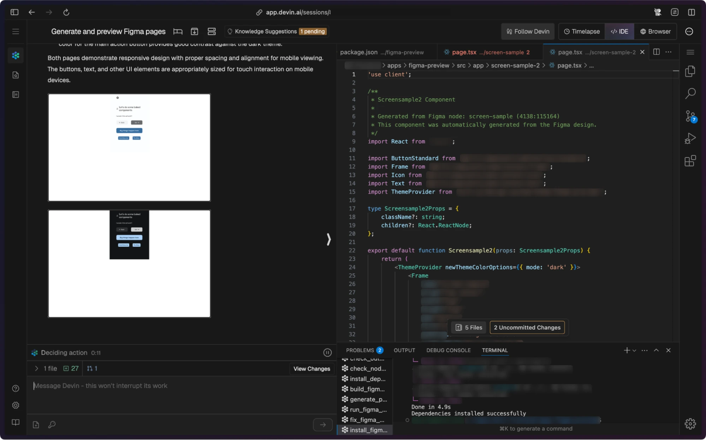

How Nubank refactors millions of lines of code to improve engineering efficiency with Devin
Overview
One of Nubank’s most critical, company-wide projects for 2023-2024 was a migration of their core ETL — an 8 year old, multi-million lines of code monolith — to sub-modules. To handle such a large refactor, their only option was a multi-year effort that distributed repetitive refactoring work across over one thousand of their engineers. With Devin, however, this changed: engineers were able to delegate Devin to handle their migrations and achieve a 12x efficiency improvement in terms of engineering hours saved, and over 20x cost savings. Among others, Data, Collections, and Risk business units verified and completed their migrations in weeks instead of months or years.
The Problem
Nubank was born into the tradition of centralized ETL FinServ architectures. To date, the monolith architecture had worked well for Nubank — it enabled the developer autonomy and flexibility that carried them through their hypergrowth phases. After 8 years, however, Nubank’s sheer volume of customer growth, as well as geographic and product expansion beyond their original credit card business, led to an entangled, behemoth ETL with countless cross-dependencies and no clear path to continuing to scale.
For Nubankers, business critical data transformations started taking increasingly long to run, with chains of dependencies as deep as 70 and insufficient formal agreements on who was responsible for maintaining what. As the company continued to grow, it became clear that the ETL would be a primary bottleneck to scale.
Nubank concluded that there was an urgent need to split up their monolithic ETL repository, amassing over 6 million lines of code, into smaller, more flexible sub-modules.
Nubank’s code migration was filled with the monotonous, repetitive work that engineers dread. Moving each data class implementation from one architecture to another while tracing imports correctly, performing multiple delicate refactoring steps, and accounting for any number of edge cases was highly tedious, even to do just once or twice. At Nubank’s scale, however, the total migration scope involved more than 1,000 engineers moving ~100,000 data class implementations over an expected timeline of 18 months.
In a world where engineering resources are scarce, such large-scale migrations and modernizations become massively expensive, time-consuming projects that distract from any engineering team’s core mission: building better products for customers. Unfortunately, this is the reality for many of the world’s largest organizations.
The Decision: an army of Devins to tackle subtasks in parallel
At project outset in 2023, Nubank had no choice but to rely on their engineers to perform code changes manually. Migrating one data class was a highly discretionary task, with multiple variations, edge cases, and ad hoc decision-making — far too complex to be scriptable, but high-volume enough to be a significant manual effort.
Within weeks of Devin’s launch, Nubank identified a clear opportunity to accelerate their refactor at a fraction of the engineering hours. Migration or large refactoring tasks are often fantastic projects for Devin: after investing a small, fixed cost to teach Devin how to approach sub-tasks, Devin can go and complete the migration autonomously. A human is kept in the loop just to manage the project and approve Devin’s changes.
The Solution: Custom ETL Migration Devin
A task of this magnitude, with the vast number of variations that it had, was a ripe opportunity for fine-tuning. The Nubank team helped to collect examples of previous migrations their engineers had done manually, some of which were fed to Devin for fine-tuning. The rest were used to create a benchmark evaluation set. Against this evaluation set, we observed a doubling of Devin’s task completion scores after fine-tuning, as well as a 4x improvement in task speed. Roughly 40 minutes per sub-task dropped to 10, which made the whole migration start to look much cheaper and less time-consuming, allowing the company to devote more energy to new business and new value creation instead.
Devin contributed to its own speed improvements by building itself classical tools and scripts it would later use on the most common, mechanical components of the migration. For instance, detecting the country extension of a data class (either ‘br’, ‘co’, or ‘mx’) based on its file path was a few-step process for each sub-task. Devin’s script automatically turned this into a single step executable — improvements from which added up immensely across all tens of thousands of sub-tasks.
There is also a compounding advantage on Devin’s learning. In the first weeks, it was common to see outstanding errors to fix, or small things Devin wasn’t sure how to solve. But as Devin saw more examples and gained familiarity with the task, it started to avoid rabbit holes more often and find faster solutions to previously-seen errors and edge cases. Much like a human engineer, we observed obvious speed and reliability improvements with every day Devin worked on the migration.
“Devin provided an easy way to reduce the number of engineering hours for the migration, in a way that was more stable and less prone to human error. Rather than engineers having to work across several files and complete an entire migration task 100%, they could just review Devin’s changes, make minor adjustments, then merge their PR”
Jose Carlos Castro, Senior Product Manager
Devin helps Bilt engineers overcome coder's block and accelerate development across complex projects

About the company
Bilt helps renters earn rewards on rent payments. Their platform allows users to earn points and build credit with no fees. Points can be redeemed for travel, fitness classes, rent credits, and more. Bilt has partnered with major real estate owners to create the Bilt Rewards Alliance, a network of over 3 million rental units.
Overview
Bilt was founded in 2021 to help users earn rewards on monthly rent payments. In February 2025, Bilt rolled out Devin across the engineering team to help accelerate development. Initially, the Bilt team used Devin for one-shot, simple engineering tasks but they quickly realized Devin’s deep understanding of their codebase made it a meaningful contributor to more complex projects.
Today, Devin works alongside Bilt’s engineering team as a true collaborator:
- Helping engineers overcome coder’s block by taking a first-pass on many tasks
- Implementing new features and handling DevOps tasks
- Transforming Figma designs into frontend MVPs
- Providing regular updates on the changes in the codebase to the whole Bilt team
“Devin has gotten me back into coding. As an engineering leader, I got into this field to build things, and Devin has made that experience great again by handling the tedious parts.”
— Will Laughlin, VP Engineering
How Bilt uses Devin
Devin supports Bilt’s technical teams across a range of functions:
| Eng Area | Typical Devin Task | Impact |
|---|---|---|
| Code Modernization | Java version upgrade | Engineers delegate code maintenance tasks that often distract from other high-value work |
| Engineering Management & Product Ops | Daily wins summarizer: Devin shares recap of code changes the Bilt team shipped | Automates internal product updates, promoting the highly iterative engineering culture at Bilt |
| DevOps | Investigate GCP logs, identify root cause and draft a potential fix The Bilt team put together a GCP playbook they attach to any DevOps task to ensure Devin accesses and reviews the logs in a standardized way |
One-shot review and resolution of production issues |
| Design Engineering | Programmatically access Figma components to resolve variables, generate functional frontends, and more | Frontend engineers build off of a first draft frontend, where mock design components are all already converted to code-based variables |
Scaling Devin from one-off tasks to core engineering partner
“I use Devin for most implementations — at the very least to get started. The only things I don’t start with Devin are tasks that require 90% business context and 10% code changes.”
— Cole Weis, Software Engineer
Timeline
- Dec 2024 — Joined as a design partner for Devin. A pilot team (VP Eng, tech manager, and a few engineers) ran Devin in closed preview and provided early learnings
- Feb 2025 — Organic pull from engineers 3x usage; access widened to Bilt’s entire engineering org
- Today — Devin is an essential part of the Bilt team: embedded across 106 engineers, with more than half using it every week
From one-shot tasks to more complex workflows and projects
Devin’s deep understanding of the Bilt codebase meant that the team could quickly ramp Devin up on more complex implementations that touched multiple repositories.
“Devin gets unfairly pigeon-holed as only being able to handle small tasks. But it’s excellent at explaining cross-repository interactions that would take a long time to figure out manually. Devin’s been super useful in helping implement features that span multiple repos.”
— Haseeb Javed, Software Engineer
The Bilt team is now delegating major code modernization projects, devops workflows, design-to-code, and product operations use cases to Devin. For example, the team created a GCP playbook to standardize instructions on how to navigate and pull the logs from Google Cloud. Devin now investigates GCP issues and proposes a first-pass fix. In many cases, Devin has “one-shotted” complex DevOps problems that would traditionally require significant engineering time.

Image: Devin reviewing error logs using Bilt’s GCP playbook.Another workflow the Bilt team is working on with Devin is turning Figma designs into code. Russell, Frontend Engineer at Bilt, connected Devin to the Figma API, enabling it to download design files and generate functional frontend code using the company’s component library. This approach empowers designers to create high-fidelity prototypes in actual code rather than static Figma mockups.

Image: Devin building a dummy component from Bilt’s design library.Along with daily summarizer which recaps codebase updates every week, the Bilt team has built out creative workflows and use cases that lean on Devin’s strengths: working in mature, complex repositories.
Breaking through "Coder's Block"
One of Devin’s most valuable contributions so far at Bilt has been reducing the friction of getting started on any project. Rather than procrastinating on tasks or starting on projects from scratch, engineers now delegate the initial implementation to Devin.
“You can use Devin as a starter to-do list. Even if you’re not sure what you want to implement and write Devin a vague prompt, it’ll do some of the upfront thinking for you and helps you get out of that coder’s block.”
– Will Laughlin, VP Engineering
The workflow typically follows one of two paths:
- Full Devin implementation: For tasks with clear outcomes and acceptance criteria, Devin handles the entire implementation successfully
- Collaborative refinement: For the more complex or open-ended projects, engineers take Devin’s initial work and build on top of it in their own code editors or directly in Devin’s IDE
This iterative approach to working with Devin has allowed Bilt’s engineers ship 10x faster, leaning into their iterative engineering culture – break things down into small pieces, ship fast and deliver daily value.
“Multitasking is a lot more approachable with Devin. You can use the gaps in your schedule with Devin, and you can actually ship code when it would have otherwise been unproductive buffer time.”
— Will Laughlin, VP Engineering
Bilt's Advice to teams onboarding Devin
Start with clear acceptance criteria: Break down problems and establish clear goals before involving Devin. You can use Ask Devin to help with the scoping part of the task.
Make your codebase AI-friendly:
- Keep things modular
- Establish good rule sets
- Provide good examples
- Maintain well-organized data
Be creative: Experiment with new workflows (e.g. DevOps, Figma-to-code), and lean on features like playbooks and Ask Devin to delegate more complex projects to Devin.
“Devin has made tedious tasks less involved. You get more joy out of the sheer act of coding because all the things you need to do around coding like test writing are handled, and you can move faster to the next big problem.”
— Haseeb Javed, Software Engineer
Ready to start working with Devin?
Start working with Devin today – sign up for the Core or Team plan. Plug Devin into Slack, Linear and GitHub; watch ideas turn into merged PRs on your commute to work.